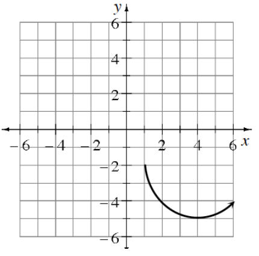
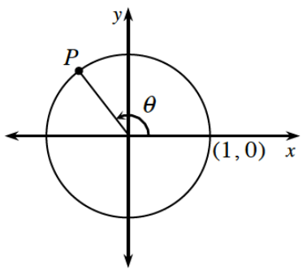
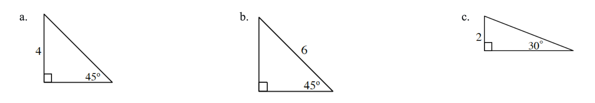
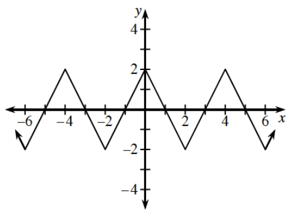
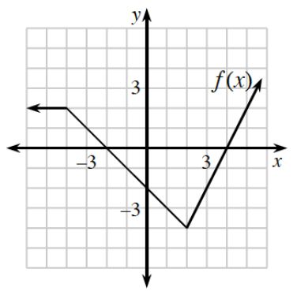

Lesson 2.2.3
.figure-full image option. Homework Help text omitted. Figure filenames now use hyphens. Code comments included for easier editing.2.2.3 How can I build a wave?
Sketch a unit circle. In your circle, sketch an angle in standard position so that the angle has:
A positive cosine and a negative sine.
A negative cosine and a negative sine.
Let \(f(x)=2x+3\) and \(h(x)=\frac{x-3}{2}\). Use function composition to determine if \(f\) and \(h\) are inverse functions. How can you check your answer graphically?
Curve, starting at the point (1, comma negative 2), opening up, turning up at the point 4, comma negative 5), continuing, up & right.Given the portion of a curve graphed at right, complete the curve so that it represents an:
even function
odd function

Evaluate each expression without using a calculator. Compute without a calculator
\(64^{2/3}\)
\(125^{4/3}\)
\(81^{3/4}\)
\(\left(\frac{27}{8}\right)^{-2/3}\)
Sketch the graph of \(f(x) =\left\{ \begin{array} { c } { - x ^ { 2 } + 4 \text { for } x < 0 } \\ { x ^ { 2 } - 1 \text { for } x \geq 0 } \end{array} \right.\). Is \(y=f(x)\) continuous? Explain.
Unit circle, with point in second quadrant labeled, p, segment connecting p to center of circle, and a curved arrow, labeled theta, pointing counterclockwise, from the positive x axis, to the radius.Examine the diagram at right. If the \(y\)-coordinate of \(P\) is \(0.8\), answer the following questions.
What does \(\sin(θ)\) equal?
What does \(\cos(θ)\) equal?

A periodic function is a function whose graph repeats itself identically, over and over, as it is followed from left to right. Periodic functions have “periodicity,” which simply means that they repeat at regular intervals. Many things you are familiar with also have this quality. Clocks have it, so do metronomes, and of course, periodicals.
The graph of \(y=f(x)\) is a periodic function. Use it to complete parts (a) through (d) below.
Linear piecewise, arrows on both ends, rising to an unidentified vertex in second quadrant, falling to a vertex on the positive y axis, rising to the vertex, (1, comma 4), falling to the vertex, (5, comma 2), rising to the vertex, (6, comma 4), falling to an unidentified vertex, then rising.
The period of a periodic function can be described as the smallest horizontal shift possible that preserves the function’s appearance. What is the period of \(f\) ?
Even though the points are not shown on the graph, what are \(f(-14)\) and \(f(105)\)? Explain how you determined these values.
Is \(f(2)\) equal to \(f(50)\)? Explain.
Use the idea of transformations of functions to write an equivalent expression for \(f(x)\) in this situation.

Calculate the exact length of each side of the triangles. Write your answers in simplified radical form.
Right triangle labeled as follows: vertical leg, 4, angle opposite vertical leg, 45 degrees.
Right triangle labeled as follows: hypotenuse, 6, angle opposite vertical leg, 45 degrees.
Right triangle labeled as follows: vertical leg, 2, angle opposite vertical leg, 30 degrees.

Periodic linear graph, x axis scaled from negative 6 to 6, with 5 visible turning points: (negative 4, comma 2), (negative 2, comma negative 2), (0, comma 2), (2, comma negative 2), (4, comma 2), & (6, comma negative 2). X intercepts at negative 5, negative 3, negative 1, 1, 3, & 5.Consider the “saw tooth” graph at right.
What is the amplitude?
What is the period?
State the domain and range.
What are the \(x\)-intercepts of the function? Express your answer as an equation.

Continuous piecewise, labeled, f of x, with following 3 linear pieces: from the left side, horizontal to the point (negative 4, comma 2), falling to the point (2, comma negative 4), rising up & right, passing through the point (5, comma 2).Using the graph of \(y=f(x)\) at right, sketch the following function transformations.
\(y=f(2x)\)
\(y=f\left(\frac{1}{2}x\right)\)
\(y=f(-x)\)

Burton travels on cruise control at \(50\) mph from 2:00 p.m. until 5:00 p.m.
How far does he travel?
Sketch a graph of this situation using velocity in miles per hour and time in hours. Shade the area under the curve in the first quadrant. What shape is the shaded region?
Explain why the shaded area represents a distance of \(150\) miles.
Use a graphing calculator to graph \(f(x)=\frac{1}{3}x^3−\frac{1}{2}x^2−2x\). Describe where the function is increasing, decreasing, concave up, concave down, and include any maxima or minima.
Algebraically solve each system of equations and state the method you used. Check your answer graphically.
\(4y-5x=-2\)
\(x-2y=-8\)
\(y=-\frac{3}{4}x+9\)
\(2x-y=2\)
Solve for \(h\): \(S=2\pi r^2h+\pi r^2\)
Which equations have exactly the same solutions? (Note: Solving is not required.)
\(x^3+2x=x+5\)
\(x^3+x=5\)
\(x^3+x-5=0\)
\(\frac{x^3+2x}{x+5}=1\)
How are distance, rate, and time related?
Suppose you are driving at a steady rate of \(20\) mph. How long will it take you to travel \(80\) miles?
Now suppose you are driving at a steady rate of \(60\) mph, so three times as fast. Now how long will it take you to travel \(80\) miles?
If you are driving at \(r\) mph, write an expression for the time it takes to drive \(d\) miles.
If you increase your speed by a multiple of \(m\), write an expression for the time it takes to drive \(d\) miles.